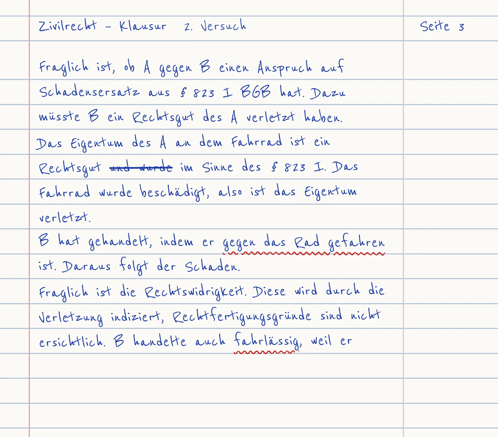
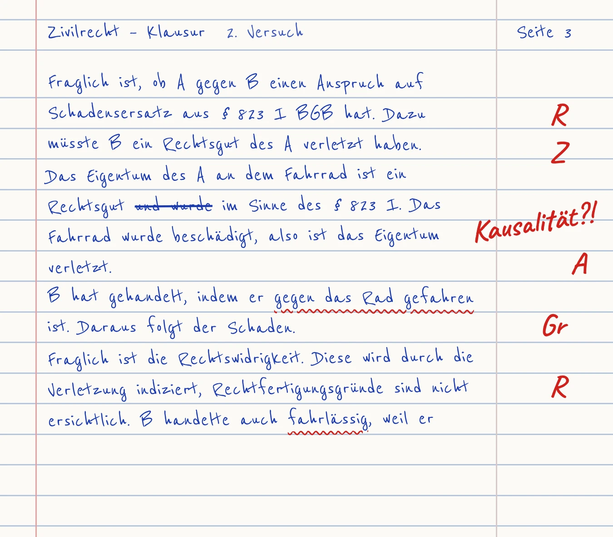
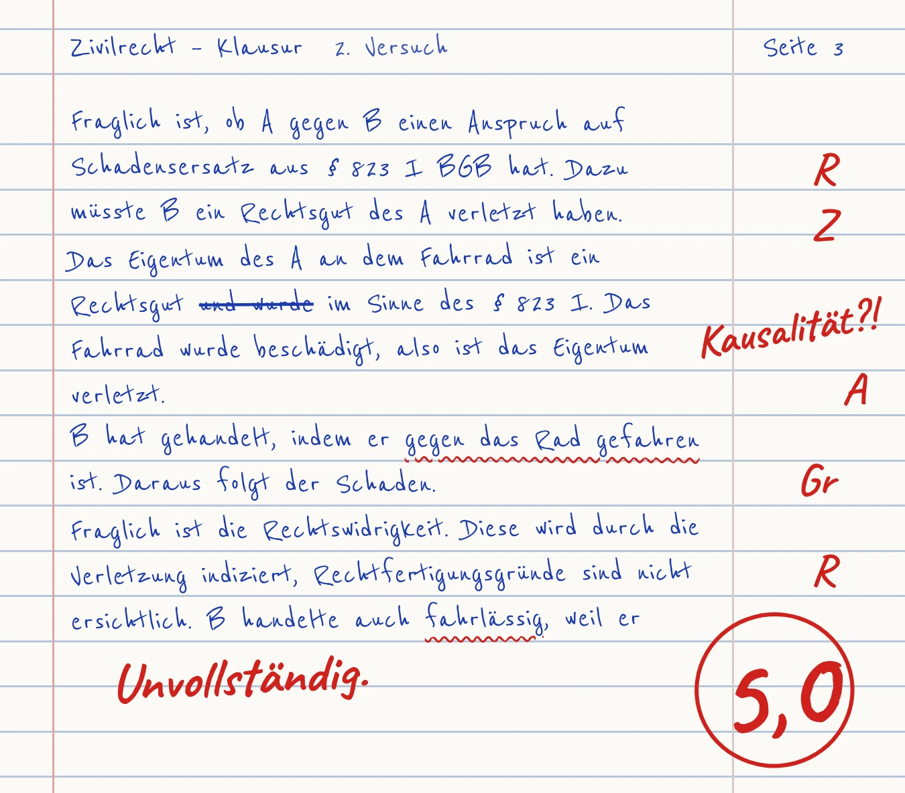

Sonntag
- Schuldrecht AT
- BGB AT
- Deliktsrecht
- Bereicherungsrecht
- Fälle 1–5
§ 823 I BGB
- Rechtsgut verletzt
- Handlung
- Kausalität
- Rechtswidrigkeit
- Verschulden
tippen
23
◀ Rückblick · tippen = weiter


